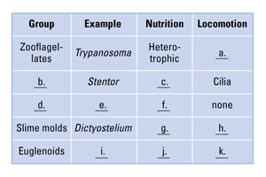
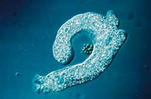
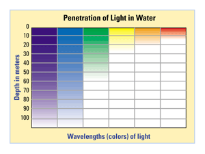

Reviewing Concepts
Multiple Choice
Choose the letter of the best answer.
1. Which of the following best defines a protist?
a. any single-celled organism
b. another name for prokaryotes
c. a eukaryote that is not a plant, animal, or fungus
d. a cell lacking mitochondria and a nucleus
2. Which choice correctly pairs a protozoan with its method of locomotion?
a. Giardia–pseudopodia
b. Plasmodium–flagella
c. Amoeba–can't move on its own
d. Paramecium–cilia
3. Which of the following most completely describes the function of cilia in protozoans?
a. reproduction and feeding
b. locomotion and reproduction
c. locomotion only
d. locomotion and feeding
4. Based on nutrition, slime molds belong to the group of protists that are
a. animal-like.
b. plant-like.
c. fungus-like.
d. bacteria-like.
5. How do dinoflagellates obtain nutrients?
a. by eating protozoans
b. through photosynthesis
c. by absorbing decaying organisms
d. by eating phytoplankton
6. Large multicellular marine algae are called
a. seaweeds.
b. protozoans.
c. zooplankton.
d. diatoms.
7. Which organisms may have evolved into chloroplasts, according to the theory of endosymbiosis?
a. heterotrophic ciliates
b. photosynthetic bacteria
c. photosynthetic seaweeds
d. parasitic apicomplexans
Short Answer
8. In what sense can protists be considered the most complex type of cells?
9. Explain why protozoans are considered "animal-like" protists.
10. Contrast three modes of movement among protozoans.
11. Identify the organism that causes malaria and describe its life cycle.
12. Explain the function of the web-like structure of a plasmodium.
13. Under what circumstances do cellular slime molds form colonies?
14. Identify a harmful effect of a downy mildew.
15. Explain the role plankton play in most aquatic habitats.
16. Describe a characteristic of diatoms that distinguishes them from other algae.
17. What does the theory of endosymbiosis propose about how eukaryotes may have evolved from prokaryotes?
Visualizing Concepts
18. Copy the table below on a separate piece of paper and complete it.

Applying Concepts
Analyzing Information
19. Analyzing Photographs Use the photograph to help you answer the questions below.

a. Explain how the organism in the photograph above obtains food.
b. Based on nutrition, to what group of protists does this organism belong?
20. Analyzing Graphs This graph indicates the depth that certain wavelengths (colors) of light penetrate water.

a. Which colors of light are available for photosynthesis by algae that live at a depth of 10 meters? 70 meters?
b. Green algae grow best when both blue-violet and red light are available for photosynthesis. At what depth range would you expect to find the most green algae? Explain.
c. Red algae can grow at depths of 100 meters or more. What can you infer about the type of light red algae can use for photosynthesis? Explain.
Critical Thinking
21. Comparing and Contrasting How are plasmodial and cellular slime molds different from one another? How are they similar to each other?
22. Relating Cause and Effect What advice about eating would you give to people living near the site of a red tide outbreak? Explain.
23. Evaluating the Impact of Scientific Research Describe the impact of molecular analysis on the classification of protists.
24. Problem Solving You are a healthcare worker in a clinic in the tropics. More people than usual have recently come into the clinic suffering from malaria.
a. What are some questions you could ask your patients to try to track the source of this outbreak of malaria?
b. What suggestions can you make to help reduce the occurrence of malaria in this area?
25. What's Wrong With These Statements?
Briefly explain why each statement is inaccurate or misleading.
a. Slime molds are multicellular.
b. Dinoflagellates are heterotrophs.
c. Endosymbiosis is a form of sexual reproduction in protists.
d. Seaweeds are marine plants.
Performance Assessment
Biology Research Project Research, design, and create a poster to educate people about a protist-related human disease, including information about the life cycle of the protist that causes it, methods of transmission, and some methods of prevention.